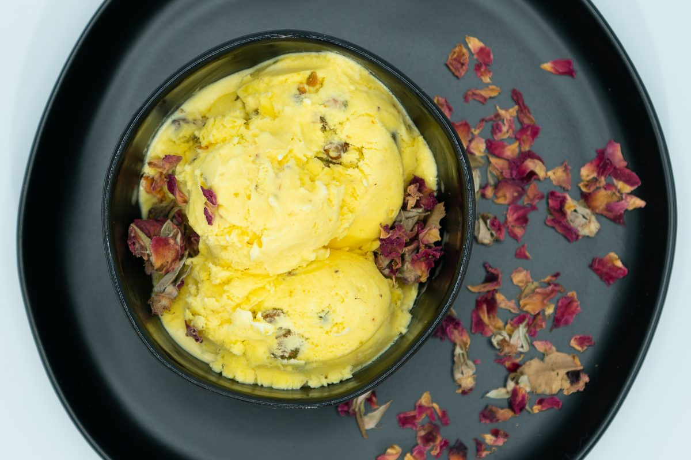

Bastani (Persian Ice Cream)

Description
While visiting Ottawa in Dec 2019, my friend's mom took the 3 of us to a Persian restaurant where I had bastani for the first time. I have been obsessed ever since and HAD to learn how to make it!
Ingredients
- 1 3/4 cups whole milk
- 2 cups heavy cream
- 8 egg yolks
- 1 cup organic cane sugar
- 1 cup pistachios, roughly chopped
- 1.5 tbsp rose water
- 1 tsp vanilla bean paste or extract
- 2 tbsp bloomed saffron (1/2 tsp saffron, ground and dissolved in 2 tbsp of boiled water)
- 1 pinch salt
Steps
- In a medium pot, slowly heat the milk until it starts steaming. Add the vanilla extract and salt. Continue to cook on low heat, stirring occasionally while doing the next step.
- Beat the egg yolks with the sugar until smooth and foamy and eggs have doubled in size. Very carefully and slowly, pour the milk mixture into the eggs, while whisking constantly.
- Pour the combined mixture back into the medium pot and cook on low heat while stirring constantly with a wooden spoon until thickened, about 5-10 minutes (it will be foamy and coat the spoon).
- Strain the custard mixture through a mesh sieve into a mixing bowl and stir in saffron and rosewater.
- Once cool, stir in the cream and refrigerate until well chilled.
- Pour mixture into an ice cream maker and churn according to the instructions, adding pistachios halfway through.